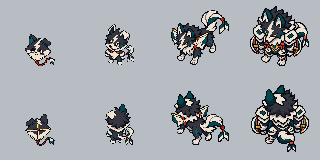

Farpim → Papisco → Velcão → Alvacordo
Mesma câmera elevada, paleta e escala de pixels. Linha superior: frente em ¾. Linha inferior: costas em ¾. Alvacordo é a referência aprovada, preservada sem alterações.
FarpimBebêPapiscoCriançaVelcãoJovem · quadrúpedeAlvacordoAdulto · aprovado

Cada célula mede 80×80; o corpo ocupa tamanhos diferentes. A altura total inclui orelhas, cauda e rabiola. Duas poses por personagem; não são animações nem assets já integrados.
Produção e revisão · Medidas verificadas